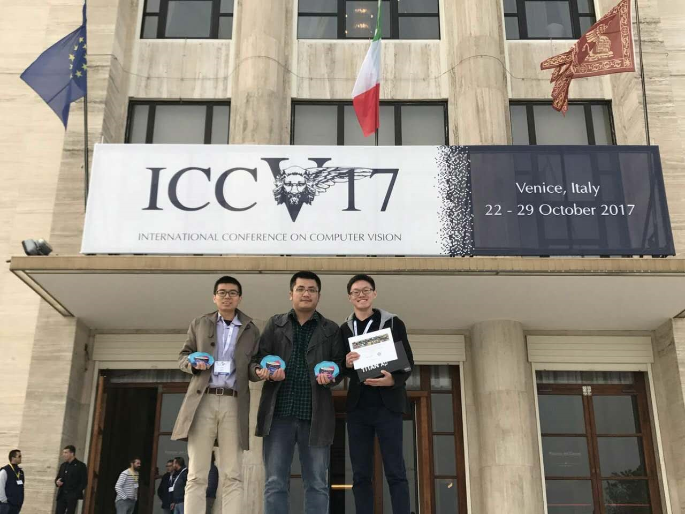
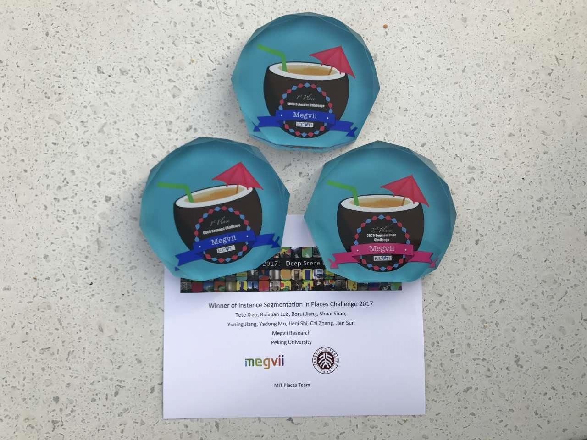

Lead Researcher, Face++ (Megvii Technology Ltd.)
Jiang graduated from University of Science and Technology of China (USTC) in 2010. After that, he joined School of Electrical & Electronics Engineering, Nanyang Technological University (NTU) in Singapore as a research staff, supervised by Prof. Junsong Yuan. In 2013, he left Singapore and joined a 10-person start-up company focusing on face recognition business in Beijing, which has grown up to a 10-billion-valued unicorn AI company and is known as Face++ (Megvii Technology Ltd.) nowadays. Jiang is currently a lead researcher at Megvii Research.
Jiang's research topics include computer vision and machine learning. Currently, he focuses on face recognition, object detection, scene parsing and visual semantic embedding. He is also interested in augmented reality, medical image analysis and image advertisement.
Email: jyn AT megvii.com
Google Scholar and CV
Jobs/Intern Opening: Researcher/Engineer in Beijing China or Seattle US.Latest News:
- Our team won COCO and Places Challenges 2017: 1st Places of COCO Detection, COCO Keypoint, Places Instance Segmentation!
  - We propose Repulsion Loss for pedestrian detection task and achieve the 1st Place in CityPersons leaderboard!
- Two papers are accepted in CVPR 2017. Congratulation to Hexiang, Jiayuan, Shiyi and Tete!
- One paper is accepted in ACMMM 2016. Congratulation to Jiahui!
Selected Publications:
- Hexiang Hu*, Shiyi Lan*, Yuning Jiang, Zhimin Cao, Fei Sha, "FastMask: Segment Object Multi-scale Candidates in One Shot", CVPR 2017. (Spotlight)[code]
- Jiayuan Mao*, Tete Xiao*, Yuning Jiang, Zhimin Cao, "What Can Help Pedestrian Detection?", CVPR 2017.
- Jiahui Yu, Yuning Jiang, Zhangyang Wang, Zhimin Cao, Thomas Huang, "UnitBox: an Advanced Object Detection Network", ACM Multimedia 2016.
- Mu Yang, Brian Li, Haoqiang Fan, Yuning Jiang, "Randomized Spatial Pooling in Deep Convolutional Networks for Scene Recognition", ICIP 2015. (Oral)
- Yuning Jiang, Jingjing Meng, Junsong Yuan, "Randomized Spatial Context for Object Search", IEEE Trans. on Image Processing (TIP) 2015.
- Erjin Zhou, Haoqiang Fan, Zhimin Cao, Yuning Jiang, Qi Yin, "Learning Face Hallucination in the Wild", AAAI 2015.
- Haoqiang Fan, Mu Yang, Zhimin Cao, Yuning Jiang, Qi Yin, "Learning Compact Face Representation: Packing a Face into an int32", ACM Multimedia 2014.
- Chaoqun Weng, Yuning Jiang, Junsong Yuan, "Direct Mining Co-occurrence Features for Visual Recognition: a Branch and Bound Method", ICME 2013. (Oral)
- Erjin Zhou, Haoqiang Fan, Zhimin Cao, Yuning Jiang, Qi Yin, "Extensive Facial Landmark Localization with Coarse-to-Fine Convolutional Network Cascade", ICCVW on 300 Faces in-the-Wild Challenge 2013. (Top Winner)
- Yuning Jiang, Jingjing Meng, Junsong Yuan, "Rapid Object Search Engine for Contextual Advertisement", ACM Multimedia 2012. (Demo)
- Yuning Jiang, Junsong Yuan, Gang Yu, "Randomized Spatial Partition for Scene Recognition", ECCV 2012.
- Yuning Jiang, Jingjing Meng, Junsong Yuan, "Randomized Visual Phrase for Object Search", CVPR 2012}.
- Yuning Jiang, Jingjing Meng, Junsong Yuan, "Grid-based Local Feature Bundling for Efficient Object Search and Localization", ICIP 2011. (Oral)
- Jingjing Meng, Junsong Yuan, Yuning Jiang, Nitya Narasimhan, Venu Vasudevan, Ying Wu, "Interactive Visual Object Search through Mutual Information Maximization", ACM Multimedia 2010.
Awards:
- Top Winner of COCO Detection, COCO Keypoint and Places Instance Segmentation Challenges, 2017
- Runner-up of COCO Instance Segmentation Challenge, 2017
- Top Winner of 300 Face in-the-wild Challenge, 2013
- Outstanding Graduate Student of USTC, 2010
Professional Activities:
- Reviewer of referred conferences: CVPR, ICCV, ECCV, ICIP, VCIP
- Reviewer of referred journals: TIP, TCSVT, TMM, PR